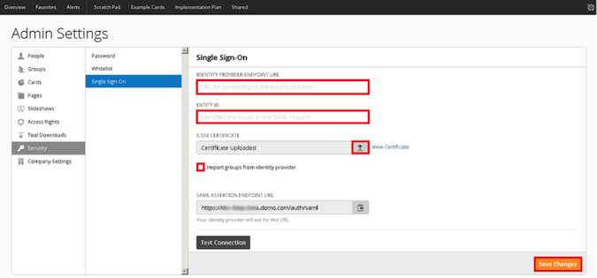
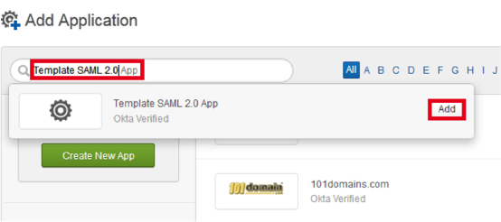
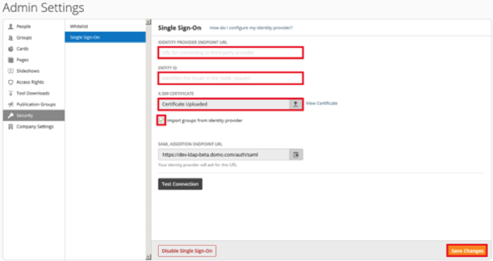
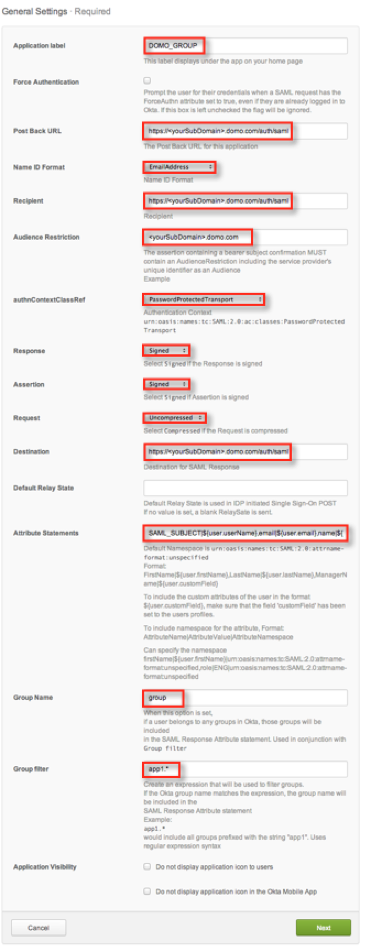

This setup might fail without parameter values that are customized for your organization. Please use the Okta Administrator Dashboard to add an application and view the values that are specific for your organization.
Case 1: For groups not using Group Push
- Sign in to Domo and navigate to the Settings > Admin > Security > Single Sign-on section.

-
Check Enable Single Sign-on button.
-
Copy the following URL into the Identity Provider Endpoint URL field.
Sign into the Okta Admin dashboard to generate this value.
-
Copy the following URL into the Entity ID field.
Sign in to the Okta Admin dashboard to generate this value.
-
Upload the following certificate into the x.509 certificate field.
Sign in to the Okta Admin dashboard to generate this value.
- Uncheck Import groups from identity provider.
- Select Save Changes.
Important: Once users are set up for SSO, they are required to use the SSO sign in.
- Done!
Note: IDP-initiated, SP-initiated flows and Just in Time (JIT) provisioning are supported.
The SP-initiated workflow will be tested before configuration is saved.
Case 2: With groups using Group Push
- Sign into Okta and create a Template SAML 2.0 App.

- Enter the following values to the following fields in the General Settings for the new Template SAML 2.0 App. See the screen shot at the end for reference.
- Application label: The name that will appear under the app on the Domo home page.
- Post Back URL: https://<yourSubDomain>.domo.com/auth/saml
- Name ID Format: EmailAddress
- Recipient: https://<yourSubDomain>.domo.com/auth/saml
- Audience Restriction: <yourSubDomain>.domo.com
- authnContextClassRef: PasswordProtectedTransport
- Response: Signed
- Assertion: Signed
- Request: Uncompressed
- Destination: https://<yourSubDomain>.domo.com/auth/saml
- Default Relay State: Leave this field empty.
- Attribute Statements: SAML_SUBJECT|${user.userName},email|${user.email},name|${user.firstName} ${user.lastName}
- Group Name: group
- Group filter: Enter an expression that will be used to filter groups. For example: app1.* includes all groups prefixed with the string app1. This field accepts regular expression syntax
- Application Visibility: Leave unchecked
- Select Next.
- Assign the application to user. Select Done.
- Select the Applications > Sign On tab then select View Setup Instructions. Scroll down to the Configuration Data section to retrieve the data you'll need for the next steps.
- Sign in to Domo and navigate to the Settings > Admin > Security > Single Sign-on section.

- Copy the following values from the Okta setup instructions page to the following Domo single sign-on page:
- Enter the value of Redirect Login URL into IDENTITY PROVIDER ENDPOINT URL field in Domo
- Enter the value of External key into ENTITY ID field in Domo
- Download the Public certificate from Okta and the upload it to the X.509 CERTIFICATE field in Domo
- Check Import groups from identity provider.
- Select Save Changes.
- Done!
Note: IDP-initiated, SP-initiated flows and Just in Time (JIT) provisioning are supported.
The SP-initiated workflow will be tested before configuration is saved.
Template SAML 2.0 App Configuration Example:
